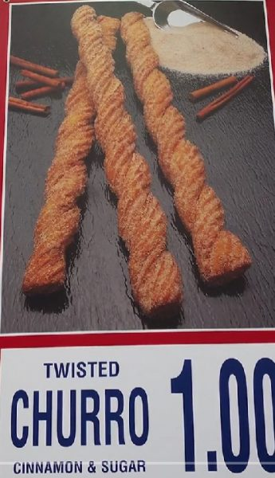

Costco（好市多）在加拿大和美国的分店都设有美食广场，餐牌上售卖的小食看似大同小异，但实际上各有特色。温哥华食店网评人Arty实地测试了两国Costco美食广场的食品来个“味分高下”。
热狗
首回合是热狗餐，两地的热狗肠吃起来是差不多，但原来只有加拿大Costco 的热狗包才洒上了芝麻，而且质感比较松软。此外，在加拿大也可选点带有辛辣味的波兰肉肠。这回合加拿大胜。
意式披萨
两地的Costco美食广场均有供应甚受欢迎的辣肉肠和芝士披萨，但吃来没有多大分别。此局打成平手。
鸡肉凯撒沙拉
这款沙拉在美国的Costco才有，Arty相信鸡肉可能是来自该店有名的烤鸡。此局美国胜。
炸薯条
炸薯条原来只在加国的Costco才有售，对美国顾客来说未免是太可惜了，因为实在太美味。
美味的炸薯条还可以浇上芝士肉汁，变成加拿大驰名美食Poutine，当然也是加国分店独有。这回合无疑是加国大胜。
炸鸡条
炸鸡条配薯条也是加拿大店才有的，再胜一仗。
火鸡三明治
这是在美国店才有的，尽管略嫌有点干，但整体来说不错。美国得分。
烘鸡卷
美国店售卖热腾腾的烘鸡卷是人间美食，加拿大店快引进吧！没法子，美国胜。
西班牙炸油条与巧克力碎曲奇
在美国店吃到的西班牙炸油条令加拿大人看得牙痒痒，但我们这边也有出色的巧克力碎曲奇。此局打成平手。

雪糕
加拿大店的软雪糕不但有脆甜筒，而且也可点焦糖或巧克力新地，完胜。
饮品
饮品方面美国明显优胜，因为有冻咖啡和冰沙提供，加拿大只有汽水。
总结赛果，双方各胜4局，另2局平手。最终Arty一锤定音，断定加拿大店的食品较美国店的优胜，然而如果那个西班牙炸油条能加进餐牌中，加拿大人肯定不会反对。
@bearcreekeatsUSA vs Canada Costco Food Court Menu ♬ original sound – ARTYTIME
图：ArtyTime/TikTok
V20